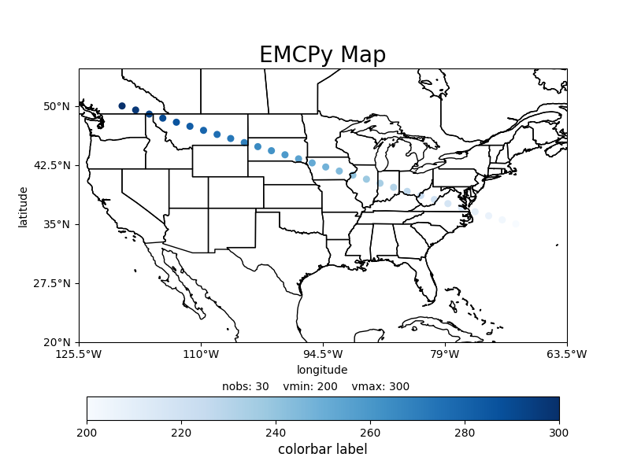

Note
Go to the end to download the full example code
Creating a map plot with scatter data#
The following example plots scatter data on a map plot over a CONUS domain. This example also shows how to annotate stats on the plot.
import numpy as np
import matplotlib.pyplot as plt
from emcpy.plots import CreatePlot, CreateFigure
from emcpy.plots.map_tools import Domain, MapProjection
from emcpy.plots.map_plots import MapScatter
def main():
# Create test data
lats = np.linspace(35, 50, 30)
lons = np.linspace(-70, -120, 30)
data = np.linspace(200, 300, 30)
# Create scatter plot on CONUS domian
scatter = MapScatter(lats, lons, data)
# change colormap and markersize
scatter.cmap = 'Blues'
scatter.markersize = 25
# Create plot object and add features
plot1 = CreatePlot()
plot1.plot_layers = [scatter]
plot1.projection = 'plcarr'
plot1.domain = 'conus'
plot1.add_map_features(['coastline', 'states'])
plot1.add_xlabel(xlabel='longitude')
plot1.add_ylabel(ylabel='latitude')
plot1.add_title(label='EMCPy Map', loc='center',
fontsize=20)
plot1.add_colorbar(label='colorbar label',
fontsize=12, extend='neither')
# annotate some stats
stats_dict = {
'nobs': len(np.linspace(200, 300, 30)),
'vmin': 200,
'vmax': 300,
}
plot1.add_stats_dict(stats_dict=stats_dict, yloc=-0.175)
fig = CreateFigure()
fig.plot_list = [plot1]
fig.create_figure()
plt.show()
if __name__ == '__main__':
main()
Total running time of the script: ( 0 minutes 0.953 seconds)